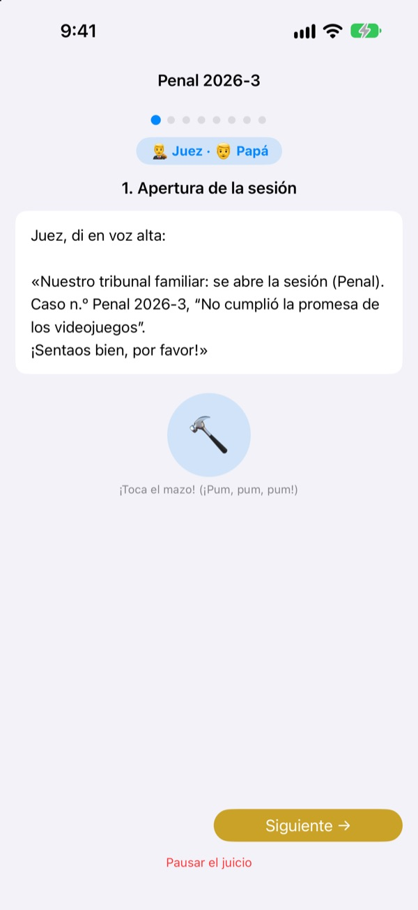
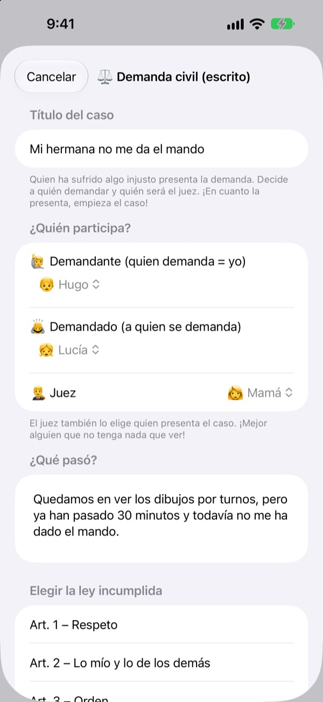
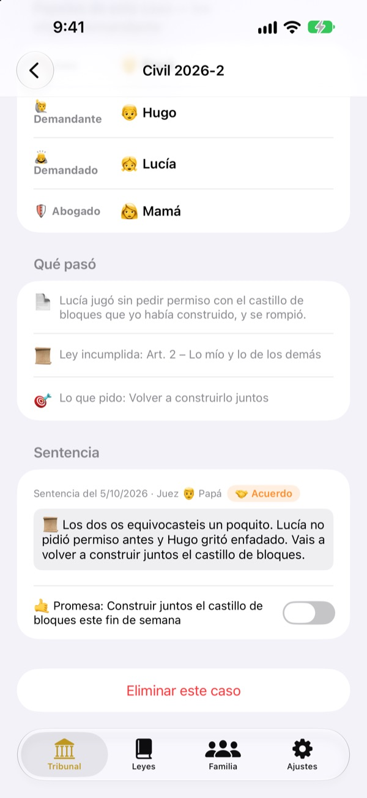
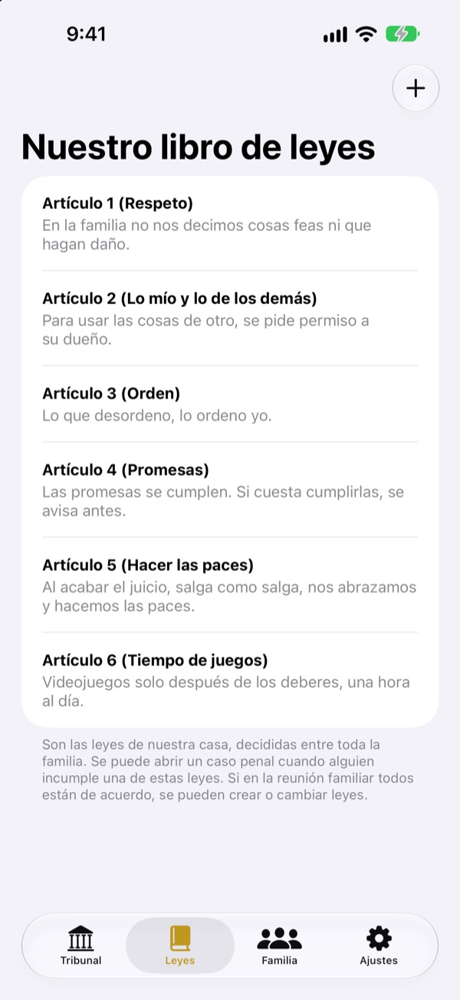

¿Es injusto?
Sin lágrimas: a juicio.
Tu hijo presenta él mismo la demanda como demandante, y la familia se reparte los papeles de juez y abogado. En cada paso, un guion dice a quién le toca y qué decir, así que hasta el primer juicio sale como uno de verdad.
Sin anuncios, sin compras, sin registro. Todo se queda en este dispositivo.

Celebra un juicio
Un caso rápido: «Mi hermano pequeño no me da el mando.» Cambia arriba el nivel de vocabulario, da un golpe de mazo y pon en marcha el temporizador. Suena, así que revisa el volumen.
«¡Empezó él!» ¿Cansado de ser siempre el árbitro?
Cuando hay pelea, casi siempre acaba decidiendo un adulto. El que pierde llora porque le parece injusto, y el que gana no sabe muy bien por qué. Tribunal Familiar da a los niños un orden: contar toda su versión y escuchar la del otro hasta el final. Y la sentencia acaba con una promesa, no solo con un castigo.
Quien se siente agraviado demanda él mismo
Quien cree que algo es injusto se convierte en demandante y presenta la demanda. Contra quién, y quién será juez, lo decide quien demanda. Los niños pueden demandar incluso a papá y mamá.
¿Viste a alguien saltarse una norma de casa? Hazte fiscal y presenta un caso penal. Solo puede ser juez quien no sea demandante ni demandado.

Las sentencias acaban con una promesa
Con la sentencia se fija una promesa o sanción, que se marca cuando se cumple. Los casos cerrados se convierten en vuestros precedentes.
Las sanciones sugeridas empiezan por reparar y arreglar las cosas con el otro, más cerca de reconciliar que de castigar. Quitar videojuegos o tele va al final.

Vuestra casa, vuestras leyes
Escribid como artículos las normas que acordáis en familia, como el respeto, recoger o cumplir las promesas, y añadid o cambiad cuando queráis. La demanda indica qué ley se incumplió.
«Conoce el tribunal» explica qué hacen el juez, el demandante, el fiscal y el abogado, y cómo se desarrolla un juicio.

Empieza en tres pasos
- 1
Añade a la familia
Basta un nombre y un emoji. Sin cuenta.
- 2
Presenta un caso
¿Injusto? Civil. ¿Norma de casa incumplida? Penal. Luego elige juez.
- 3
Abre el juicio
Sigue el guion, controla el tiempo con el temporizador y dicta sentencia con el mazo.
Palabras que crecen con tu hijo
- Juez
- Sencillo: Árbitro · Tribunal: Presidente
- Demandante
- Sencillo: Quien se queja · Tribunal: Demandante
- Demandado
- Sencillo: Quien responde · Tribunal: Demandado
- Fiscal
- Sencillo: Quien lo vio · Tribunal: Fiscal
- Acusado
- Sencillo: Quien responde · Tribunal: Acusado
- Abogado
- Sencillo: Quien ayuda · Tribunal: Abogado
- Civil
- Sencillo: No es justo · Tribunal: Civil
- Penal
- Sencillo: Promesa rota · Tribunal: Penal
Elige el nivel de vocabulario en Ajustes y las palabras de la pantalla y del guion cambian a la vez. Prueba Sencillo para infantil y Estándar para primaria.
Preguntas frecuentes
¿Desde qué edad?
Cualquier niño que sepa leer puede jugar con un adulto. Con el guion, las indicaciones y el nivel Sencillo, los más pequeños también participan si un adulto lee en voz alta.
¿De verdad es gratis?
Sí. Sin anuncios y sin compras que desbloqueen funciones. En Ajustes hay una propina opcional para apoyar al desarrollador, que no desbloquea ni bloquea nada.
¿Hace falta internet?
No. Los juicios y el archivo funcionan sin conexión. Solo necesitas internet e iniciar sesión en iCloud para enviar comentarios desde Ajustes.
¿Dónde se guardan los datos?
Familia, leyes, juicios y sentencias se guardan solo en el dispositivo y no se envían a ningún servidor. Al desarrollador solo le llegan los comentarios que tú envías y estadísticas de uso anónimas que no te identifican.
¿Puedo hacer copia o pasarlo a otro dispositivo?
Con «Guardar datos» en Ajustes exportas todo a un archivo, y con «Cargar datos» en el otro dispositivo vuelve a estar tal cual. También se cargan las copias de la antigua versión web.
¿Funciona en iPad?
Sí, en iPhone y en iPad. Una pantalla grande es ideal con toda la familia alrededor.
¿Y si las sanciones se pasan de duras?
Cuando el fiscal pide una sanción, el guion recuerda que no sea muy dura y que se pueda cumplir. Las sanciones sugeridas empiezan por reparar: arreglar lo hecho, cuidar al otro y ponerse en su lugar.
¿Cómo lo borro todo?
Al eliminar la app se borran todos los registros del dispositivo. Nada ha salido de él, así que no queda nada en otro sitio. Para borrar comentarios enviados, escríbenos.
¿Errores, ideas o cualquier otra cosa? Escribe a leeo@kakao.com. También puedes enviar comentarios desde los ajustes de la app.